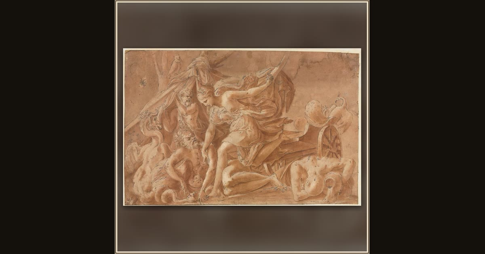

Copy after Primaticcio's Juno Awakening Sleep
Copy after Francesco Primaticcio (Italian, 1504–1570), France · after 1535 · cma
Hera reaches down from a chariot toward Sleep, whom she meets on Lemnos and asks to close Zeus's eyes after she has lain beside him (14.231). Explore its place in Homer's Iliad, Book XIV, line 231.